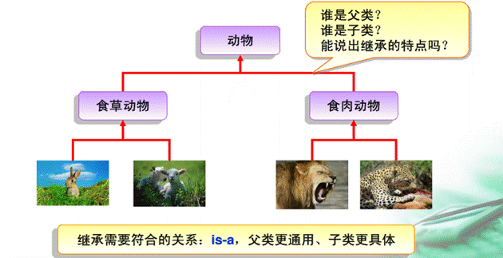
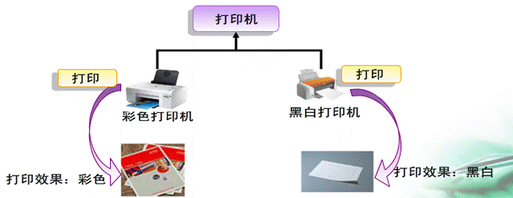
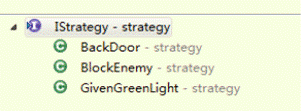

2013-9-4
1.什么是封装？
封装就是将属性私有化，提供公有的方法访问私有属性。如：
private String name;
public String getName(){
retun name;
}
public void setName(){
this.name = name;
}
1.生活中，继承的例子随处可见，如：
2.使用继承的好处？
使用继承提高代码的复用性
3.如何实现继承
在Java语言中，用extends关键字表示一个类继承另一个类，例如：
public class Son extends Father{
//其余代码省略
}
在父类中只定义一些通用的属性与方法，例如：
public class Animal{
private String name;
pulic Animal(String name){
//初始化属性值
}
public void eat(){
//吃方法的具体实现
}
}
子类自动继承父类的属性和方法，子类中可以定义特定的属性和方法，如：
public class Lion extends Animal{
public Lion(String name){
super(name);
}
public void eat(){
System.out.println(“继承父类eat()”);
super.eat();
}
}
1.什么是多态？
指父类中定义的属性与方法被子类继承后，可以具有不同的数据类型或行为。
2.生活中的多态，如：
3.多态是通过覆盖父类的方法来实现，在运行是根据传递的对象引用，来实现相应的方法，如：
public static void main(String[] args){
A a = new B();
a.print();
}
static class A{
void print(){
System.out.println(“This is A.”);
}
}
static class B{
void print(){
System.out.println(“This is B.”);
}
}
1.Java中的多重继承
接口是实现多重继承的途径
多重继承：子类可以实现多个接口;子类只能继承一个父类
class A{}
class B{}
class C extends A{}
interface D{}
interface E{}
interface F extends D,E{}
public class Test extends C implements D,E
使用接口的核心原因：
a.为了能够向上转型为多个基类型（以及由此带来的灵活性）
b.与使用抽象类相同:防止客户端程序员创建该类的对象，并确保这仅仅是建立一个接口
注：如果知道某事物应该成为一个基类，那么第一选择应该使它成为一个接口
2.适配接口
接口最吸引人的原因之一，就是允许同一个接口具有多个不同的具体实现；
它的体现形式通常是一个接受接口类型的方法，而该接口的实现和向该方法传递的对象则取决于方法的使用者。
典型运用就是策略模式

public Context(IStrategy strategy){
this.strategy = strategy;
}
Scanner类的构造方法：参数也是使用接口
public Scanner(Readable source){
this(source,WHITESPACE_PATTERN)
}
3.接口中的域
接口中的域默认就是static final
jdk1.5以前其可以实现与enum类似的作用
接口可以嵌套在类或其他接口中
例如java.util.Map
4.接口与工厂
接口是实现多重继承的途径，而生成遵循某个接口的对象的典型方式就是工厂模式，如：
public interface Human{
public void laugh();
public void cry();
public void talk();
}
public static Human createHuman(class c){
Human human = null;
try{
human=(Human) Class.forName(c.getName()).newInstance();
}catch(ClassNotFoundException e){
}
return human;
}
1.内部类的定义
可以将一个类的定义放在另一个类的定义内部，这就是内部类
2.当我们建立一个inner class时，其对象就拥有了与外部类对象之间的一种关系，这是通过一个特殊的this reference形式的，使得内部类对象可以随意的访问外部类中所有的成员。
public class Outer{
private int index = 100;
private void print(){
Inner i = new Inner();
i.print();
}
class Inner{
private void print(){
System.out.println(index);
}
}
public static void main(String[] args){
Outer o = new Outer();
o.print();
}
}
3.使用.this与.new
a.在内部类中生成对外部类对象的引用.this
public class DotThis {
void f() {
System.out.println(“DotThis.f()”);
}
public class Inner{
public DotThis outer(){
//在内部类方法中生成对外部类的引用
return DotThis.this;
}
}
}
b.在其他类中创建内部类对象.new要通过外部类的一个引用来创建
public class DotNew{
public class Inner {}
public static void main(String[] args){
//其它类要访问内部类时
//要使用外部类的引用来创建内部类的引用
DotNew dn = new DotNew();
DotNew.Inner dni = dn.new Inner();
}
}